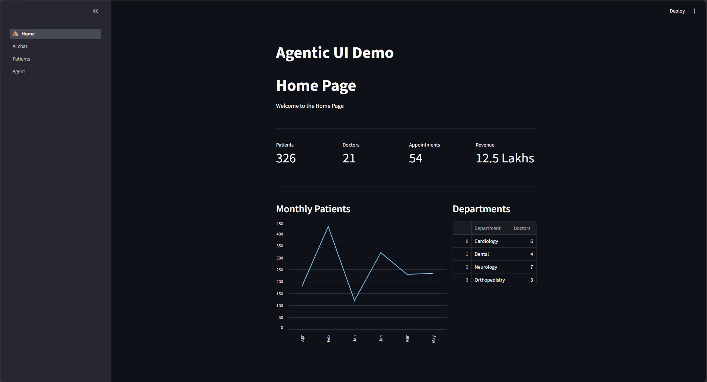
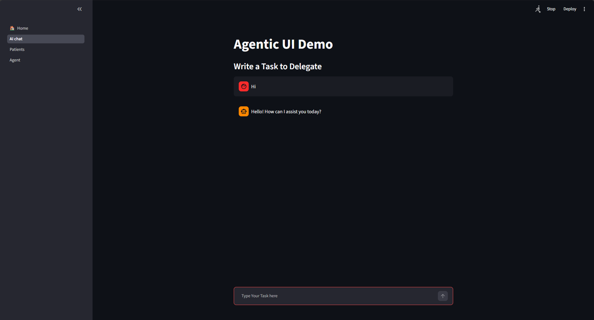
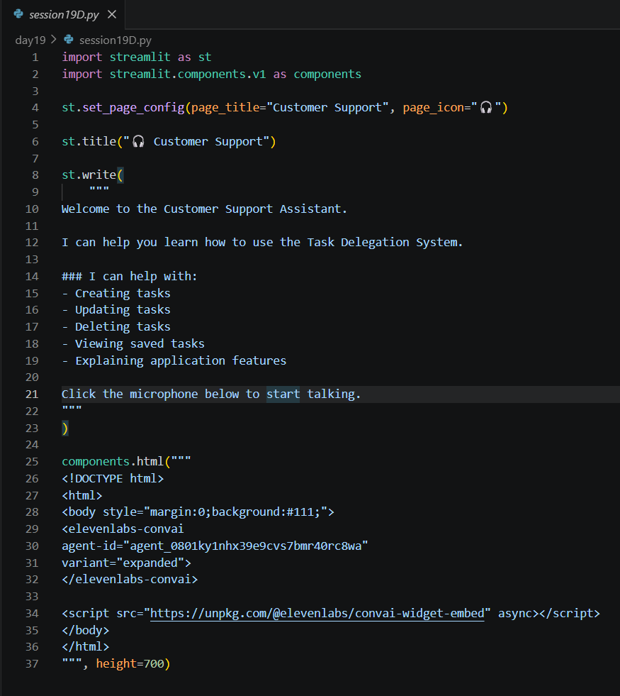
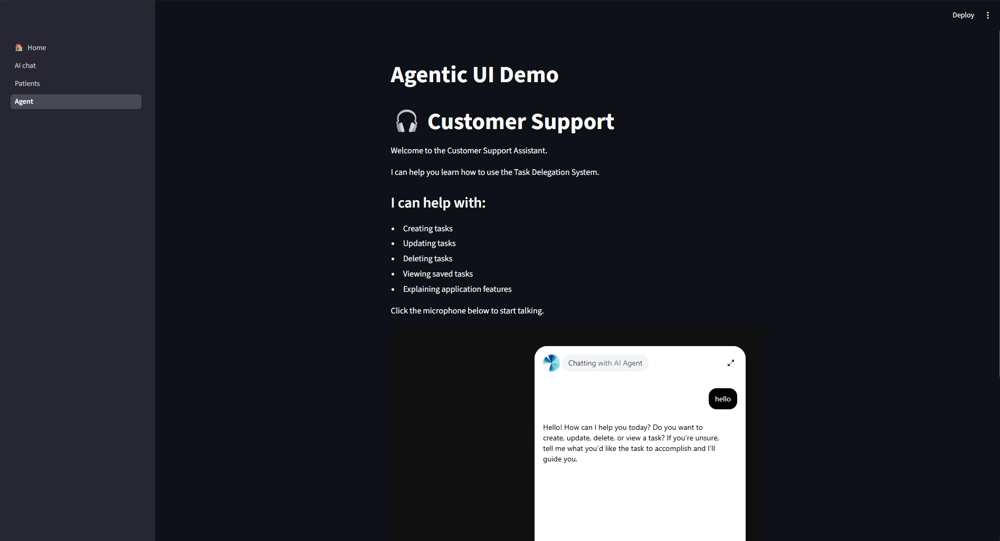

Date: 21st July 2026
Duration: 2 Hours
Training Company: Auribises Technologies
Trainer: Mr. Ishant Kumar
Today's session focused on making our Agentic AI application more interactive by integrating an AI-powered voice assistant using ElevenLabs Conversational AI. We also organized the application into multiple Streamlit pages, allowing users to navigate between the dashboard, AI chat, patient records, and the voice assistant through a single interface.
The application was structured using Streamlit Navigation. Individual pages such as Home, AI Chat, Patients, and Voice Agent were registered and combined into a single navigation menu, making the project easier to maintain and extend.

The existing Agentic AI Chat was enhanced further by continuing the integration of OpenAI Function Calling with MongoDB. The chatbot could understand natural language requests, identify the appropriate backend function, and perform CRUD operations on stored tasks.

The major highlight of today's session was embedding an ElevenLabs Conversational AI widget inside the Streamlit application. Instead of typing commands, users could communicate with the AI assistant through voice. The voice assistant was configured using an ElevenLabs Agent ID and embedded using HTML components within Streamlit.

A dedicated Customer Support page was created to guide users through the Task Delegation System. The assistant can explain application features, help users create, update, delete, and view tasks, making the system more user-friendly through conversational interaction.

The MongoDB DBHelper class continued to manage all database operations including inserting,
retrieving, updating, and deleting task documents. This reusable helper class simplified communication
between the Streamlit frontend and MongoDB Atlas.
No separate assignment was given. The class focused on integrating the ElevenLabs Voice Agent into the existing Agentic AI Task Management application and testing the complete workflow.
Today's session demonstrated how modern AI applications can move beyond text-based interactions. Integrating ElevenLabs with Streamlit showed how conversational voice interfaces can be added to existing AI systems with minimal code changes. Seeing the voice assistant work alongside OpenAI Function Calling and MongoDB made the project feel much closer to a real-world AI product.
With the concepts covered over the previous sessions, our training shifted from learning individual technologies to building a complete real-world project. Starting from the next session, we began developing Delegate AI, an AI-powered task delegation system that combines OpenAI, MongoDB, Streamlit, Twilio, and ElevenLabs into a single intelligent platform.
Rather than working on isolated examples, every upcoming session would contribute directly to building and improving Delegate AI by adding new features such as contact management, task scheduling, AI calling agents, voice interactions, and automation workflows.
The next session marks the beginning of the Delegate AI project, where we will start building the project structure and progressively develop a production-style AI task delegation application using everything learned throughout the training.